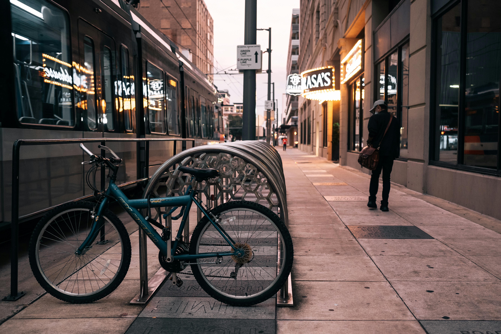

El Pulso de la Ciudad:
Transporte Masivo en Acción
Explora cómo el transporte público impulsa el corazón de la ciudad, conectando a las personas con oportunidades y mejorando la accesibilidad para todos.

Movilidad Sostenible
Ciudades Resilientes
Aprende sobre la movilidad sostenible y cómo los medios de transporte público están liderando el camino hacia ciudades más verdes, saludables y resilientes para todos.